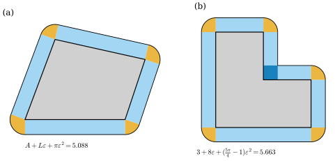
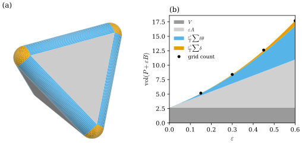

40.4 Steiner's Formula and Mollified Polyhedra
Goals
- smooth surface를 normal 방향으로 \(\varepsilon\)만큼 민 offset의 넓이와 enclosed volume이 \(\varepsilon\)의 다항식이고, 그 coefficient가 \(\int H\,dA\)와 \(\int K\,dA\)임을 이 study set의 부호로 유도할 수 있다.
- Minkowski sum과 mollified polyhedron을 정의하고, convex polyhedron \(P\)에서 \(\operatorname{vol}(P + \varepsilon B)\)가 \(\varepsilon\)의 삼차 다항식이고 그 coefficient가 \(V\), \(A\), \(\tfrac12\sum\ell_{ij}\theta_{ij}\), \(\tfrac13\sum\delta_i\)임을 증명할 수 있다.
- 두 다항식의 coefficient를 맞대어 edge의 discrete mean curvature \(H_{ij} = -\tfrac12\ell_{ij}\theta_{ij}\)를 얻고, 그 부호를 이 study set의 \(H\)(Notation and Conventions)와 맞출 수 있다.
- convex가 아니면 Minkowski sum의 넓이가 그 다항식이 아님을 예로 보일 수 있다.
Prerequisites
- Section 40.1–40.3: Gauss image Proposition 40.1.7, Descartes's theorem Corollary 40.2.10, 세 curvature normal Proposition 40.3.1.
- Chapter 39: normal offset의 first fundamental form Proposition 39.5.1, parallel surface와 그 Gauss map Proposition 38.6.12, Exercise 39.1.3, bending angle과 그 부호 Definition 39.5.5, Proposition 39.5.6.
- Chapter 32: plane curve의 offset과 discrete Steiner formula Proposition 32.3.7.
- Track 1: Proposition 31.2.6(같은 공식을 넓이 판으로 소개했다).
Motivation
Section 40.3은 mean curvature를 normal과 곱한 vector \(2H\mathbf{N}\)으로 만들었다. 그러면 수 \(H\) 자체는 mesh의 어디에 있는가? Chapter 31은 정육면체의 edge를 둥글게 깎아 curvature가 vertex와 edge에 모이는 것을 보였다(Section 31.1). 이 절은 그 생각을 정리로 만든다. 강의 슬라이드의 말로는 이렇다. polyhedron을 미분하면 vertex와 edge에서 “무한대”가 나오므로, 먼저 surface를 부드럽게 다듬고(mollify) 다듬은 surface의 curvature를 잰 뒤 다듬는 정도를 \(0\)으로 보낸다 [CMU-DDG L16] slide 28.
다듬는 방법은 normal 방향으로 미는 것, 곧 offset이다. Chapter 32는 plane curve를 \(\varepsilon\)만큼 민 offset의 길이로 discrete curvature를 셋 얻었고(Proposition 32.3.7), Chapter 39는 offset의 first fundamental form이 \(\mathrm{I} - 2t\,\mathrm{II} + t^2\mathrm{III}\)임을 보였다(Proposition 39.5.1). surface에서는 offset의 넓이와 부피가 \(\varepsilon\)의 다항식이 되고, 그 coefficient가 curvature다.
The Smooth Steiner Formula
Proposition 40.4.1 (area of parallel surfaces). immersion \(\mathbf{x}\colon U \to \R^3\)의 Gauss map을 \(\mathbf{N}\)이라 하고 \(\mathbf{x}_\varepsilon = \mathbf{x} + \varepsilon\mathbf{N}\)이라 하자. compact한 영역 \(D \subseteq U\)(boundary가 있는 rectangle 등) 위에서 모든 principal curvature가 \(\varepsilon\kappa_i \lt 1\)을 만족하면 \(\mathbf{x}_\varepsilon\)은 \(D\)에서 immersion이고 그 Gauss map은 \(\mathbf{N}\)이며
이다(\(A = \operatorname{area}(\mathbf{x}(D))\)). 넓이는 Proposition 38.2.5의 뜻, 곧 \(\int_DdA_\varepsilon\)이다.
Proof. \(d\mathbf{x}_\varepsilon = d\mathbf{x} + \varepsilon\,d\mathbf{N}\)이므로 wedge의 bilinearity와 \(d\mathbf{x}\wedge d\mathbf{N} = d\mathbf{N}\wedge d\mathbf{x}\)(Proposition 35.5.13), 그리고 (40.3.1)에서
\[ \begin{aligned} \tfrac12\,d\mathbf{x}_\varepsilon\wedge d\mathbf{x}_\varepsilon &= \tfrac12\,d\mathbf{x}\wedge d\mathbf{x} + \varepsilon\,d\mathbf{x}\wedge d\mathbf{N} + \tfrac{\varepsilon^2}{2}\,d\mathbf{N}\wedge d\mathbf{N} \\ &= (1 - 2\varepsilon H + \varepsilon^2K)\,\mathbf{N}\,dA \end{aligned} \]
이다. \(1 - 2\varepsilon H + \varepsilon^2K = (1 - \varepsilon\kappa_1)(1 - \varepsilon\kappa_2) \gt 0\)이므로, 이 식을 \((\partial_u, \partial_v)\)에 넣으면 \((\mathbf{x}_\varepsilon)_u\times(\mathbf{x}_\varepsilon)_v\)는 \(\mathbf{x}_u\times\mathbf{x}_v\)의 양수배다. 따라서 \(\mathbf{x}_\varepsilon\)은 immersion이고 Gauss map이 \(\mathbf{N}\)이며, Proposition 38.3.5를 \(\mathbf{x}_\varepsilon\)에 쓰면 \(dA_\varepsilon = (1 - 2\varepsilon H + \varepsilon^2K)\,dA\)이다. \(D\) 위에서 적분하면 (40.4.1)이다.
넓이 요소의 배율 \(1 - 2\varepsilon H + \varepsilon^2K\)는 Chapter 39가 예고한 \(\det(I_2 - \varepsilon\mathsf{W})\)이다(Proposition 39.5.1 뒤). 증명이 보여 주듯, Section 40.3의 세 curvature normal이 바로 offset의 area form의 세 coefficient다. 강의 슬라이드도 같은 계산을 한다 [CMU-DDG L16] slide 37.
Proposition 40.4.2 (volume of the offset region). compact surface \(S\)가 영역 \(\Omega\)를 둘러싸고 \(\mathbf{N}\)이 바깥쪽이라 하자. \(\varepsilon \gt 0\)이 충분히 작으면 \(\Omega_\varepsilon = \Omega\cup\{p + t\mathbf{N}(p) : p \in S,\ 0 \le t \le \varepsilon\}\)의 부피는
이다.
Derivation. 다음을 받아들인다(tubular neighborhood theorem). \(\varepsilon\)이 충분히 작으면 \((p, t) \mapsto p + t\mathbf{N}(p)\)는 \(S\times(0, \varepsilon]\)에서 \(\Omega_\varepsilon\setminus\Omega\)로 가는 bijection이다. \(S\)의 한 조각을 \(\mathbf{x}(u, v)\)로 쓰면 \((u, v, t) \mapsto \mathbf{x} + t\mathbf{N}\)의 Jacobian determinant는
\[ \begin{aligned} \det[(\mathbf{x}_t)_u, (\mathbf{x}_t)_v, \mathbf{N}] &= \inner{(\mathbf{x}_t)_u\times(\mathbf{x}_t)_v}{\mathbf{N}} \\ &= (1 - 2tH + t^2K)\abs{\mathbf{x}_u\times\mathbf{x}_v} \end{aligned} \]
이다. \(t\) 방향의 미분이 \(\mathbf{N}\)이고, cross product는 Proposition 40.4.1의 증명에서 계산했다. change of variables formula로
\[ \begin{aligned} \operatorname{vol}(\Omega_\varepsilon\setminus\Omega) &= \int_S\int_0^\varepsilon(1 - 2tH + t^2K)\,dt\,dA \\ &= \varepsilon A - \varepsilon^2\int H\,dA + \frac{\varepsilon^3}{3}\int K\,dA \end{aligned} \]
이다.
Example 40.4.3 (sphere and torus). (a) 반지름 \(r\)인 sphere(바깥쪽 \(\mathbf{N}\), \(H = -1/r\), \(K = 1/r^2\))에서 \(\int H\,dA = -4\pi r\), \(\int K\,dA = 4\pi\)이므로 (40.4.1)은 \(4\pi r^2 + 8\pi r\varepsilon + 4\pi\varepsilon^2 = 4\pi(r + \varepsilon)^2\), (40.4.2)는 \(\tfrac43\pi r^3 + 4\pi r^2\varepsilon + 4\pi r\varepsilon^2 + \tfrac43\pi\varepsilon^3\), 곧 \(\tfrac43\pi(r + \varepsilon)^3\)이다. 반지름 \(r + \varepsilon\)인 sphere의 값과 맞는다. (b) torus of revolution \(T_{R,r}\)에 바깥쪽 normal을 주면 \(\int H\,dA = -2\pi^2R\)(Exercise 39.3.5의 부호를 바꾼 것), \(\int K\,dA = 0\)이므로 넓이는 \(4\pi^2Rr + 4\pi^2R\varepsilon = 4\pi^2R(r + \varepsilon)\), 부피는 \(2\pi^2Rr^2 + 4\pi^2Rr\varepsilon + 2\pi^2R\varepsilon^2\), 곧 \(2\pi^2R(r + \varepsilon)^2\)이다. 관의 반지름이 \(r + \varepsilon\)인 torus다(\(\varepsilon \lt R - r\)).
Verification: verify/v-40-4-steiner-mollified.py
plane curve에서는 같은 일이 길이와 넓이에서 일어난다. convex plane region을 바깥쪽으로 \(\varepsilon\)만큼 밀면 둘레가 \(L + 2\pi\varepsilon\), 넓이가 \(A + L\varepsilon + \pi\varepsilon^2\)이 된다. \(2\pi\)는 total curvature \(\int\kappa_s\,ds\)이고(Proposition 32.2.4의 offset 공식에서 바깥쪽이 \(-J\mathbf{t}\) 방향이라는 것을 쓴다), surface에서는 이 자리에 mean curvature와 Gaussian curvature가 나뉘어 들어간다.
Minkowski Sums
polyhedron은 normal이 vertex와 edge에서 정해지지 않으므로 “normal 방향으로 민다”를 그대로 쓸 수 없다. 대신 점 하나하나를 ball로 부풀린다.
Definition 40.4.4 (Minkowski sum). \(A, B \subseteq \R^n\)에 대하여
를 \(A\)와 \(B\)의 Minkowski sum(민코프스키 합)이라 한다. \(\varepsilon B = \{\varepsilon b : b \in B\}\)이고, 이 절에서 \(B\)는 원점이 중심인 닫힌 unit ball이다.
\(A\)를 \(p\)만큼 translate하면 \(A + B\)도 \(p\)만큼 translate될 뿐이다(\((A + p) + B = (A + B) + p\)). 강의 슬라이드가 묻는 “translation이 상관있는가?”의 답이다 [CMU-DDG L16] slide 29. 닫힌 집합 \(A\)에 대해 \(A + \varepsilon B = \{y : d(y, A) \le \varepsilon\}\)이다. \(y = a + \varepsilon b\)이면 \(\abs{y - a} \le \varepsilon\)이고, 거꾸로 \(d(y, A) \le \varepsilon\)이면 가장 가까운 점 \(a\)(closed이므로 있다)로 \(y = a + (y - a)\), \(\abs{y - a} \le \varepsilon\)이기 때문이다.
Example 40.4.5 (segments and convex polygons). (a) 길이 \(\ell\)인 선분과 평면의 disk \(\varepsilon B\)의 Minkowski sum은 양끝이 반원인 띠(stadium)이고 넓이는 \(2\varepsilon\ell + \pi\varepsilon^2\)이다. 공간에서는 양끝이 hemisphere인 cylinder이고 부피는 \(\pi\varepsilon^2\ell + \tfrac43\pi\varepsilon^3\)이다. (b) 평면의 convex polygon \(P\)에서는 \(P + \varepsilon B\)가 \(P\), 변마다의 폭 \(\varepsilon\)인 직사각형, vertex마다의 부채꼴로 나뉘고, 부채꼴의 중심각이 그 vertex의 exterior angle이라 합이 \(2\pi\)다. 그래서 \(\operatorname{area}(P + \varepsilon B) = A + L\varepsilon + \pi\varepsilon^2\)이다(Exercise 40.4.3). Figure 40.4.1(a)의 사각형에서 이 값은 \(5.088\)이고, 간격 \(0.002\)인 격자로 센 넓이와 \(10^{-3}\) 안에서 같다.
Verification: verify/v-40-4-steiner-mollified.py
Non-example 40.4.6 (a polygon that is not convex). vertex가 \((0, 0), (2, 0), (2, 1), (1, 1), (1, 2), (0, 2)\)인 L자 polygon(\(A = 3\), \(L = 8\))은 concave vertex \((1, 1)\)이 하나 있다. \(\varepsilon \le 1\)이면 \(P + \varepsilon B\)는 \(P\), 변마다의 직사각형, convex vertex 다섯의 사분원으로 덮이는데, concave vertex에서는 두 직사각형이 한 변이 \(\varepsilon\)인 정사각형에서 겹치고 부채꼴이 없다. 그래서
\[ \operatorname{area}(P + \varepsilon B) = 3 + 8\varepsilon + \Big(\frac{5\pi}{4} - 1\Big)\varepsilon^2 \neq 3 + 8\varepsilon + \pi\varepsilon^2 \]
이다. \(\varepsilon = 0.3\)에서 왼쪽은 \(5.663\)이고 격자로 센 값도 \(5.663\)이다. 오른쪽 \(5.683\)은 concave vertex에 “음의 부채꼴” \(-\tfrac\pi4\varepsilon^2\)을 준 값인데, 실제로 빠지는 것은 겹친 정사각형 \(\varepsilon^2\)이다. 부채꼴과 정사각형의 넓이는 각이 작을 때만 비슷하다(Chapter 32의 arc와 miter의 차이, Proposition 32.3.7). 이 절의 정리는 그래서 convex polyhedron에 대한 것이다.
Verification: verify/v-40-4-steiner-mollified.py
Figure 40.4.1의 왼쪽 (a)를 보자. 회색 사각형 둘레에 하늘색 직사각형 넷이 변을 따라 붙고, vertex의 주황 부채꼴 넷이 그 사이를 메운다. 부채꼴의 각은 vertex에서 진행 방향이 꺾이는 각이고, 넷을 붙이면 disk 하나(\(\pi\varepsilon^2\))가 된다. 오른쪽 (b)의 L자에서는 convex vertex 다섯에 사분원이 붙고, concave vertex \((1, 1)\)의 오른쪽 위에서 두 직사각형이 진한 파란 정사각형으로 겹친다. 검은 곡선이 \(P + \varepsilon B\)의 boundary \(\{d = \varepsilon\}\)이다.

Mollified Polyhedra
이 절에서 convex polyhedron(볼록 다면체)은 interior가 비어 있지 않은 compact convex set \(P \subseteq \R^3\)으로, 그 boundary가 닫힌 simplicial surface의 embedding의 image이고 face의 orientation이 바깥쪽인 것을 말한다. 바깥쪽이라는 것은 모든 face \(f\)와 그 relative interior의 모든 점 \(p\)에서, 작은 \(t \gt 0\)에 대해 \(p + t\mathbf{N}_f \notin P\)라는 뜻이다. Corollary 40.2.10의 polyhedron이 이것이다.
Definition 40.4.7 (mollified polyhedron). convex polyhedron \(P\)와 \(\varepsilon \gt 0\)에 대하여 \(P_\varepsilon := P + \varepsilon B\)를 \(P\)의 mollified polyhedron(완화 다면체)이라 한다.
예를 들어 unit cube의 mollified polyhedron은 face를 \(\varepsilon\)만큼 밀어낸 판 여섯, edge를 따라 붙은 사분원 기둥 열둘, corner의 팔분구 여덟으로 이루어진다(Section 31.1의 둥근 정육면체). 일반적인 경우의 조각을 정확히 하려면 가장 가까운 점과 normal cone이 필요하다. 닫힌 convex set \(P\)와 \(p \in P\)에 대하여 \(N_P(p) := \{u : \inner{u}{w - p} \le 0 \text{ for all } w \in P\}\)를 \(p\)에서의 normal cone(법선뿔)이라 하자. \(u \in N_P(p)\)는 \(\inner{u}{\cdot}\)이 \(P\) 위에서 \(p\)에서 최대라는 뜻이다.
Lemma 40.4.8 (nearest points on a convex set). \(P \subseteq \R^3\)이 닫힌 convex set이라 하자. (a) 모든 \(y\)에 가장 가까운 점 \(\operatorname{pr}(y) \in P\)가 꼭 하나 있다. (b) \(z \in P\)가 \(\operatorname{pr}(y)\)일 필요충분조건은 \(y - z \in N_P(z)\)이다. (c) 따라서 \(p \in \partial P\), \(u \in N_P(p)\), \(\abs u = 1\), \(t \gt 0\)인 \((p, u, t)\)에 \(p + tu\)를 대응시키는 map은 \(\R^3\setminus P\)로 가는 bijection이고, \(t = d(p + tu, P)\)이다.
Proof. (a) \(P\)의 점 \(w_0\)를 하나 잡으면 가장 가까운 점은 compact set \(P\cap\{\abs{w - y} \le \abs{w_0 - y}\}\) 안에서 찾으면 되고, 연속함수 \(\abs{w - y}\)는 거기서 최솟값을 갖는다. 두 점 \(z_1 \neq z_2\)가 모두 최소라면 중점 \(m\)도 \(P\)에 있고, parallelogram law에서
\[ \begin{aligned} \abs{m - y}^2 &= \tfrac12\abs{z_1 - y}^2 + \tfrac12\abs{z_2 - y}^2 \\ &\quad - \tfrac14\abs{z_1 - z_2}^2 \end{aligned} \]
이 최솟값보다 작아 모순이다. (b) \(w \in P\), \(s \in [0, 1]\)이면 \(z + s(w - z) \in P\)이고
\[ \begin{aligned} \abs{y - z - s(w - z)}^2 &= \abs{y - z}^2 - 2s\inner{y - z}{w - z} \\ &\quad + s^2\abs{w - z}^2 \end{aligned} \]
이다. \(z\)가 최소이면 작은 \(s \gt 0\)에서 이것이 \(\abs{y - z}^2\) 이상이어야 하므로 \(\inner{y - z}{w - z} \le 0\)이다. 거꾸로 이 부등식이 모든 \(w\)에서 성립하면 \(s = 1\)에서 \(\abs{y - w}^2 \ge \abs{y - z}^2 + \abs{w - z}^2\)이므로 \(z\)가 최소다. (c) \(y \notin P\)이면 \(p = \operatorname{pr}(y) \in \partial P\)(\(p\)가 interior point이면 \(y\) 쪽으로 더 가까운 점이 \(P\)에 있다), \(t = \abs{y - p} \gt 0\), \(u = (y - p)/t\)이고 (b)에서 \(u \in N_P(p)\)이다. 거꾸로 \(u \in N_P(p)\)이면 (b)에서 \(\operatorname{pr}(p + tu) = p\)이므로 \((p, u, t)\)는 \(p + tu\)로부터 다시 정해진다.
Lemma 40.4.9 (normal cones of a convex polyhedron). convex polyhedron \(P\)에서 face \(f\)의 평면을 boundary로 하고 \(\mathbf{N}_f\)의 반대쪽에 있는 닫힌 half-space를 \(\mathcal{H}_f\)라 하자. (a) 모든 face에서 \(P \subseteq \mathcal{H}_f\)이다. (b) \(p\)가 face \(f\)의 relative interior에 있으면 \(N_P(p) = \{s\mathbf{N}_f : s \ge 0\}\)이다. (c) \(p\)가 face \(f, g\)를 잇는 edge \(ij\)의 relative interior에 있으면 \(N_P(p) = \{a\mathbf{N}_f + b\mathbf{N}_g : a, b \ge 0\}\)이고, 그 unit vector들은 \(\mathbf{N}_f\)에서 \(\mathbf{N}_g\)로 가는 짧은 great circle arc로 길이가 \(\theta_{ij} \ge 0\)이다. (d) vertex \(i\)에서 \(N_P(\mathbf{x}_i)\cap S^2 \subseteq P_i\)이다. 여기서 \(P_i\)는 Proposition 40.1.7의 집합, 곧 모든 link vertex \(j\)에서 \(\inner{u}{\mathbf{x}_j - \mathbf{x}_i} \le 0\)인 \(u \in S^2\)의 집합이다.
Proof. (a) \(p\)를 \(f\)의 relative interior의 점, \(D\)를 \(p\)를 중심으로 \(f\)의 평면 안에서 \(f\)에 들어가는 작은 disk라 하자. \(w \in P\)가 \(\inner{\mathbf{N}_f}{w - p} = h \gt 0\)이면 convexity에서 \(w\)를 vertex로 하고 \(D\)를 밑면으로 하는 cone이 \(P\)에 있다. 작은 \(t \gt 0\)에 대해 \(p + t\mathbf{N}_f = (1 - s)q + sw\)(\(s = t/h\), \(q = (p + t\mathbf{N}_f - sw)/(1 - s)\))이고, \(q\)는 \(f\)의 평면 위에 있으며 \(t \to 0\)일 때 \(p\)로 가므로 \(D\)에 있다. 그러면 \(p + t\mathbf{N}_f \in P\)가 되어 바깥쪽이라는 가정에 어긋난다. (b) \(\supseteq\)는 (a)이다. \(u \in N_P(p)\)이면 \(f\)의 평면 안의 모든 방향 \(v\)에서 \(p \pm sv \in f\)(작은 \(s\))이므로 \(\inner{u}{v} = 0\), 곧 \(u = s\mathbf{N}_f\)이다. \(P\)의 interior point \(o\)는 (a)에서 \(\inner{\mathbf{N}_f}{o - p} \lt 0\)이고 \(\inner{u}{o - p} \le 0\)이므로 \(s \ge 0\)이다. (c) \(\supseteq\)는 (a)를 \(f\)와 \(g\)에 쓰고 \(p\)가 두 평면 위에 있다는 것이다. \(u \in N_P(p)\)이면 edge 방향으로 양쪽으로 움직여 \(\inner{u}{\hat e_{ij}} = 0\)이다. \(d_f, d_g\)를 \(f\), \(g\)의 평면 안에서 edge에 수직이고 face 안쪽을 향하는 unit vector라 하면 \(p + sd_f \in P\), \(p + sd_g \in P\)이므로 \(\inner{u}{d_f} \le 0\), \(\inner{u}{d_g} \le 0\)이다. \(\theta_{ij} = 0\)(flat edge, \(\mathbf{N}_f = \mathbf{N}_g\), \(d_g = -d_f\))이면 \(u\)는 \(\mathbf{N}_f\)의 배수이고 (b)처럼 음이 아니다. \(\theta_{ij} \neq 0\)이면 \(\mathbf{N}_f, \mathbf{N}_g\)가 edge에 수직인 평면의 basis이므로 \(u = a\mathbf{N}_f + b\mathbf{N}_g\)라 쓰고, \(\inner{u}{d_f} = b\inner{\mathbf{N}_g}{d_f}\)이다. (a)에서 \(\inner{\mathbf{N}_g}{d_f} \le 0\)이고, \(0\)이라면 \(d_f\)가 \(\mathbf{N}_g\)와 \(\hat e_{ij}\)에 수직이라 \(d_f = \pm d_g\)이다. \(d_f = d_g\)이면 두 face가 겹쳐 embedding이 아니고, \(d_f = -d_g\)이면 두 face가 한 평면에 있어 \(\theta_{ij} = 0\)이다. 둘 다 아니므로 \(\inner{\mathbf{N}_g}{d_f} \lt 0\)이다. 그래서 \(b \ge 0\)이고 같은 방법으로 \(a \ge 0\)이다. great circle arc의 길이는 \(\mathbf{N}_f\)와 \(\mathbf{N}_g\) 사이의 각 \(\abs{\theta_{ij}}\)이고, (a)에서 \(g\)의 vertex가 \(\mathcal{H}_f\)에 있으므로 Proposition 39.5.6(a)에 의해 \(\theta_{ij} \ge 0\)이다. (d) link vertex \(\mathbf{x}_j\)는 \(P\)의 점이다.
Theorem 40.4.10 (Steiner formula for convex polyhedra). convex polyhedron \(P\)의 부피를 \(V\), boundary의 넓이를 \(A\)라 하면 모든 \(\varepsilon \gt 0\)에서
이다. 합은 모든 edge와 모든 vertex에 대한 것이고, \(\sum_i\delta_i = 4\pi\)이다.
Proof idea: \(P_\varepsilon\setminus P\)의 점마다 \(P\)에서 가장 가까운 점이 face, edge, vertex 가운데 어디의 relative interior에 있는지로 나누면, 각 조각은 prism, cylinder의 부채꼴 조각, 구의 부채꼴 조각이다.
Proof. \(\partial P\)는 face, edge, vertex의 relative interior들로 서로소하게 나뉜다. Lemma 40.4.8(c)에서 \(P_\varepsilon\setminus P\)의 점은 모두 \(p \in \partial P\), \(u \in N_P(p)\cap S^2\), \(0 \lt t \le \varepsilon\)인 \(p + tu\)로 꼭 한 가지로 쓰이므로, \(p\)가 어디에 있는지로 서로소한 조각으로 나뉜다.
face. \(p\)가 face \(f\)의 relative interior에 있으면 Lemma 40.4.9(b)에서 \(u = \mathbf{N}_f\)이므로 조각은 \(f\) 위에 높이 \(\varepsilon\)으로 세운 prism이고 부피가 \(A_f\varepsilon\)이다. 모두 더하면 \(\varepsilon A\)이다.
edge. \(p\)가 edge \(ij\)의 relative interior에 있으면 Lemma 40.4.9(c)에서 \(u\)는 길이 \(\theta_{ij}\)인 great circle arc 위를 움직인다. 조각은 edge를 축으로 하는 반지름 \(\varepsilon\), 중심각 \(\theta_{ij}\), 길이 \(\ell_{ij}\)인 cylinder의 부채꼴 조각이고 부피가 \(\tfrac12\theta_{ij}\varepsilon^2\ell_{ij}\)이다(flat edge는 \(0\)).
vertex. \(p = \mathbf{x}_i\)이면 조각은 \(\{\mathbf{x}_i + tu : u \in \Sigma_i,\ 0 \lt t \le \varepsilon\}\)(\(\Sigma_i := N_P(\mathbf{x}_i)\cap S^2\))이고, 구의 부채꼴이라 부피가 \(\tfrac{\varepsilon^3}{3}\operatorname{area}(\Sigma_i)\)이다. \(\sum_i\operatorname{area}(\Sigma_i) = 4\pi\)임을 보이자. face normal 전체와 edge의 great circle arc 전체의 합집합을 \(Z\)라 하면, 유한 개의 점과 호이므로 넓이가 \(0\)이다. unit vector \(u\)마다 \(\inner{u}{\cdot}\)은 compact set \(P\) 위에서 최대가 되고, 최대가 되는 점 \(p\)는 \(\partial P\)에 있으며 \(u \in N_P(p)\)이다. \(u \notin Z\)라 하자. Lemma 40.4.9(b), (c)에서 \(p\)는 face나 edge의 relative interior에 있을 수 없으므로 vertex다. 최대가 되는 점들의 집합은 convex라, 두 점 이상이면 무한집합이 되어 vertex가 아닌 점을 포함하므로 \(u \notin Z\)에서는 최대가 되는 점이 vertex 하나뿐이다. 곧 \(S^2\setminus Z\)의 모든 \(u\)는 정확히 하나의 \(\Sigma_i\)에 속하고, \(\sum_i\operatorname{area}(\Sigma_i) = \operatorname{area}(S^2) = 4\pi\)이다. Corollary 40.2.10에서 이것은 \(\sum_i\delta_i\)이다.
세 조각의 부피와 \(V = \operatorname{vol}(P)\)를 더하면 첫 식이다. 넓이. \(\partial P_\varepsilon = \{y : d(y, P) = \varepsilon\}\)은 같은 표현에서 \(t = \varepsilon\)인 점들이고, 조각마다 face를 translate한 것(넓이 \(A_f\)), 반지름 \(\varepsilon\)인 cylinder 조각(넓이 \(\varepsilon\theta_{ij}\ell_{ij}\)), 반지름 \(\varepsilon\)인 구의 조각(넓이 \(\varepsilon^2\operatorname{area}(\Sigma_i)\))이다. 조각들은 곡선을 따라서만 만나므로 더하면 둘째 식이다.
Corollary 40.4.11 (the vertex pieces are the Gauss images). \(P\)의 모든 vertex가 convex vertex(Proposition 40.1.7 앞의 정의)이면 vertex \(i\)의 sphere 조각은 Gauss image \(P_i\)를 \(\varepsilon\)배 한 것이고 넓이가 \(\varepsilon^2\delta_i\)이다.
Proof. Lemma 40.4.9(d)에서 \(\Sigma_i \subseteq P_i\)이고, Proposition 40.1.7(c)에서 \(\operatorname{area}(P_i) = \delta_i\)이다. Theorem 40.4.10의 증명에서 \(\sum_i\operatorname{area}(\Sigma_i) = 4\pi = \sum_i\delta_i = \sum_i\operatorname{area}(P_i)\)이므로, \(\operatorname{area}(P_i\setminus\Sigma_i) \ge 0\)들의 합이 \(0\)이고 각각이 \(0\)이다. 따라서 \(\operatorname{area}(\Sigma_i) = \delta_i\)이다. 집합으로도 \(\Sigma_i = P_i\)이다. \(\Sigma_i\)가 닫힌 집합이라 \(P_i\setminus\Sigma_i\)는 \(P_i\)의 relatively open subset이고, \(P_i\)는 interior가 있는 convex spherical polygon이므로 \(P_i\setminus\Sigma_i\)가 비어 있지 않으면 넓이가 양수이기 때문이다.
Section 40.1에서 Gauss image의 넓이로 읽은 angle defect가, 여기서는 polyhedron을 부풀릴 때 vertex가 맡는 구의 조각으로 다시 나타난다. 강의 슬라이드는 이 조각을 “vertex에 연관된 모든 normal”이라고 부른다 [CMU-DDG L16] slide 32. 증명이 Descartes's theorem(Section 40.2)을 쓴 것에 주의하자. sphere 조각의 넓이를 하나씩 계산하지 않고, 합이 \(4\pi\)라는 것과 \(\Sigma_i \subseteq P_i\)만으로 정했다.
Example 40.4.12 (the unit cube and the regular tetrahedron).
(a) unit cube에서 \(V = 1\), \(A = 6\)이고, cube의 edge 열둘이 \(\ell = 1\), \(\theta = \tfrac\pi2\)이며 정사각형의 대각선은 \(\theta = 0\)이다. 그래서 \(\tfrac12\sum\ell\theta = 3\pi\)이고 \(\operatorname{vol}(P_\varepsilon) = 1 + 6\varepsilon + 3\pi\varepsilon^2 + \tfrac43\pi\varepsilon^3\)이다. 이것은 판 여섯(\(6\varepsilon\)), 사분원 기둥 열둘(\(12\cdot\tfrac\pi4\varepsilon^2\)), 팔분구 여덟(\(8\cdot\tfrac\pi6\varepsilon^3\))을 직접 더한 값과 같다. 대각선을 어떻게 그어도 \(\theta = 0\)이라 값이 같다. Chapter 31의 Example 31.2.7은 한 변이 \(2\)인 cube의 넓이 \(24 + 12\pi\varepsilon + 4\pi\varepsilon^2\)를 보였다. (b) regular tetrahedron(lib/ddg40.py의 tetrahedron, edge \(2\sqrt2\))에서 \(V = \tfrac83\), \(A = 8\sqrt3 = 13.856\), \(\theta = \pi - \arccos\tfrac13 = 1.9106\)(Example 39.5.7)이므로 \(\tfrac12\sum\ell\theta = 6\sqrt2\cdot1.9106 = 16.212\), \(\sum\delta = 4\cdot\pi\)이다. \(\varepsilon = 0.3\)에서 \(\operatorname{vol}(P_\varepsilon) = 8.3958\)이다. 간격 \(0.01\)인 격자의 칸마다 점을 하나씩 임의로 뽑아 \(P_\varepsilon\)에 든 것을 세면(stratified sampling) cube와 tetrahedron 모두 상대오차 \(10^{-4}\) 안에서 다항식의 값과 같다.
Verification: verify/v-40-4-steiner-mollified.py
Figure 40.4.2의 왼쪽 (a)는 regular tetrahedron을 \(\varepsilon = 0.35\)만큼 부풀린 surface를 세 종류의 조각으로 칠한 것이다. 회색 삼각형 넷이 face를 밀어낸 것이고, 하늘색 cylinder 조각 여섯이 edge를, 주황 구 조각 넷이 vertex를 덮는다. cylinder 조각의 중심각은 bending angle \(1.9106\)(약 \(109.5^\circ\))이라 넓고, 구 조각은 넓이가 \(\varepsilon^2\pi\)씩으로 작다. 오른쪽 (b)는 \(\operatorname{vol}(P_\varepsilon)\)를 네 항으로 쌓은 것이다. \(\varepsilon\)이 작을 때는 \(V\)와 \(\varepsilon A\)가 대부분이고, \(\varepsilon\)이 커질수록 하늘색(edge, \(\varepsilon^2\)항)과 주황(vertex, \(\varepsilon^3\)항)이 늘어난다. 검은 점(격자로 센 부피)이 쌓은 곡선의 꼭대기 위에 놓인다.

mollified_pieces), (b) \(\operatorname{vol}(P_\varepsilon)\), \(0 \le \varepsilon \le 0.6\).
읽는 법: (a) 회색은 \(\varepsilon\mathbf{N}_f\)만큼 옮긴 face, 하늘색은 edge의 cylinder 조각, 주황은 vertex의 구 조각이다. (b) 아래부터 \(V\)(진회색), \(\varepsilon A\)(연회색), \(\tfrac{\varepsilon^2}{2}\sum\ell\theta\)(하늘색), \(\tfrac{\varepsilon^3}{3}\sum\delta\)(주황)를 쌓았고, 검은 점은 간격 \(0.02\)인 격자로 센 부피다.
볼 것: (a)에 그린 조각의 넓이는 face \(13.856\), edge \(11.342\), vertex \(1.530\)이다. 정확한 값은 \(A\), \(\varepsilon\sum\ell\theta = 11.349\), \(\varepsilon^2\sum\delta = \varepsilon^2\cdot4\pi = 1.539\)이고, 차이(\(1\%\) 안)는 둥근 조각을 평면 triangle로 그린 탓이다. (b)에서 \(\varepsilon = 0.6\)일 때 네 항은 \(2.67, 8.31, 5.84, 0.90\)이고 합 \(17.72\)는 격자의 \(17.69\)와 \(0.2\%\) 안에서 같다.
본문과의 연결: Theorem 40.4.10, Example 40.4.12(b). 돌려 볼 수 있는 interactive version이 있다.Reading Off the Discrete Mean Curvature
(40.4.2)와 (40.4.4)는 같은 꼴의 다항식이다. coefficient를 맞대면
\[ \int H\,dA \;\longleftrightarrow\; -\frac12\sum_{ij}\ell_{ij}\theta_{ij}, \qquad \int K\,dA \;\longleftrightarrow\; \sum_i\delta_i \]
이다. 둘째 대응은 Section 40.1–40.2에서 이미 보았다. 첫째는 mean curvature가 edge에 몰려 있다는 것이다. 넓이의 식에서 \(-2\varepsilon\int H\,dA\)와 \(\varepsilon\sum\ell\theta\)를 맞대어도 같은 결론이다. 이 대응이 대응 이상인 이유는 mollified surface의 curvature를 직접 계산하면 알 수 있다.
Proposition 40.4.13 (curvature of a mollified polyhedron). convex polyhedron \(P\)의 \(\partial P_\varepsilon\)에 바깥쪽 normal을 주면, face 조각에서 \(K = H = 0\), cylinder 조각에서 \(K = 0\), \(H = -\tfrac{1}{2\varepsilon}\), 구 조각에서 \(K = \tfrac{1}{\varepsilon^2}\), \(H = -\tfrac1\varepsilon\)이다. 따라서 조각마다 적분해 더하면
\[ \begin{aligned} \int_{\partial P_\varepsilon}K\,dA &= \sum_i\delta_i = 4\pi, \\ \int_{\partial P_\varepsilon}H\,dA &= -\frac12\sum_{ij}\ell_{ij}\theta_{ij} - 4\pi\varepsilon \end{aligned} \]
이다.
Proof. face 조각은 평면, cylinder 조각은 반지름 \(\varepsilon\)인 cylinder의 일부, 구 조각은 반지름 \(\varepsilon\)인 sphere의 일부이고, 바깥쪽 normal에서 그 \(K, H\)는 Example 39.3.2(a), (b)의 값이다. 넓이는 Theorem 40.4.10의 증명의 \(A_f\), \(\varepsilon\theta_{ij}\ell_{ij}\), \(\varepsilon^2\operatorname{area}(\Sigma_i)\)이다. 그러면 \(\int K = \sum_i\operatorname{area}(\Sigma_i) = 4\pi\), \(\int H = -\tfrac{1}{2\varepsilon}\cdot\varepsilon\sum\theta\ell - \tfrac1\varepsilon\cdot\varepsilon^2\cdot4\pi\)이다.
\(\partial P_\varepsilon\)은 조각의 boundary에서 tangent plane은 이어지지만 curvature가 끊기는 \(C^{1,1}\) surface다. 조각마다는 Proposition 40.4.1을 쓸 수 있다. 그러면 \(\operatorname{area}(\partial P_{\varepsilon + s})\)는 \(\operatorname{area}(\partial P_\varepsilon) - 2s\int H\,dA + s^2\int K\,dA\)이고, Proposition 40.4.13의 값을 넣으면 \(\sum\ell\theta + 8\pi\varepsilon\)과 \(4\pi\)가 나와 (40.4.4)의 넓이 식을 \(\varepsilon + s\)에서 전개한 것과 같다. \(\varepsilon \to 0\)이면 \(\int_{\partial P_\varepsilon}H\,dA \to -\tfrac12\sum\ell_{ij}\theta_{ij}\)이고, 각 edge의 cylinder 조각이 \(-\tfrac12\ell_{ij}\theta_{ij}\)씩을 \(\varepsilon\)에 무관하게 맡는다. 이것을 정의로 삼는다.
Definition 40.4.14 (discrete mean curvature). orientation이 있는 mesh의 interior edge \(ij\)에서
를 edge의 discrete mean curvature(이산 평균곡률)라 한다(integrated 값, \(\theta_{ij}\)는 Definition 39.5.5의 bending angle). vertex에는 edge의 몫을 두 끝에 반씩 주어 \(H_i := \tfrac12\sum_{j\sim i}H_{ij} = -\tfrac14\sum_j\ell_{ij}\theta_{ij}\)로 나누고, 점마다의 값은 \(H_i/A_i\)로 쓴다(dgmesh.mean_curvature_dihedral).
부호는 이 study set의 \(H\)(Notation and Conventions)와 같다. 바깥쪽 orientation의 convex polyhedron에서는 \(\theta_{ij} \ge 0\)이라 \(H_{ij} \le 0\)이고, 바깥쪽 normal의 sphere에서 \(H \lt 0\)인 것과 맞는다. orientation을 뒤집으면 \(\theta_{ij}\)와 \(H_{ij}\)의 부호가 함께 바뀐다(Proposition 39.5.6(c)). 이 정의는 Chapter 31의 (31.2.6)과 같은 양이다. convex가 아닌 mesh에서도 정의는 그대로 쓴다. concave edge(\(\theta_{ij} \lt 0\))에서 \(H_{ij} \gt 0\)이다.
Example 40.4.15 (total and pointwise mean curvature).
(a) unit cube의 실제 edge는 \(H_{ij} = -\tfrac\pi4\), 대각선은 \(0\)이고 합이 \(-3\pi\)이다. (b) unit sphere의 icosphere(level)에서 \(\sum H_{ij}/4\pi\)는 level 0–5에서 \(-0.91587\), \(-0.97571\), \(-0.99370\), \(-0.99841\), \(-0.99960\), \(-0.99990\)으로 smooth의 \(\int H\,dA/4\pi = -1\)에 간다. \(H_i/A_i\)(mixed Voronoi area, Definition 42.4.4)는 level 5에서 \([-1.0002, -1.0002]\) 안에 있다. barycentric \(A_i\)로 나누면 level 4에서도 \([-1.146, -0.998]\)로 퍼진다(Example 31.2.7). 점마다의 값이 \(A_i\)의 선택에 민감한 것은 Gaussian curvature에서와 같다(Figure 40.1.3). (c) torus_mesh(2, 0.8, nu, nv)는 convex가 아니지만(안쪽 절반에서 meridian 방향의 edge는 \(\theta \lt 0\)) \(\sum H_{ij}\)는 smooth의 \(\int H\,dA = -2\pi^2R = -39.478\)(바깥쪽 normal)에 다가가고, 그 오차는 격자를 두 배로 할 때마다 약 \(\tfrac14\)로 준다(Exercise 40.4.6).
Verification: verify/v-40-4-steiner-mollified.py
Remark 40.4.16 (nonconvex polyhedra). convex가 아닌 polyhedron에서는 \(P + \varepsilon B\)의 부피가 (40.4.4)의 다항식이 아니다. concave edge와 saddle vertex 근처에서 조각들이 겹치기 때문이다(평면의 판이 Non-example 40.4.6). 반면 부호가 있는 \(\theta_{ij}\)와 \(\delta_i\)를 그대로 넣은 다항식에도 뜻을 줄 수 있다. 평면에서 보자. 반시계 방향으로 도는 simple polygon의 변을 바깥쪽으로 \(\varepsilon\)만큼 translate한 선분들을, vertex \(\mathbf{v}_i\)를 중심으로 하는 반지름 \(\varepsilon\), signed angle \(\tau_i\)(exterior angle. concave vertex에서는 음수라 시계 방향으로 돈다)의 호로 이어 closed curve \(c_\varepsilon\)를 만든다. 그러면 \(c_\varepsilon\)가 둘러싼 signed area \(\mathcal{A}(\varepsilon) = \tfrac12\oint_{c_\varepsilon}(x\,dy - y\,dx)\)(점마다 winding number를 곱해 센 넓이)는 정확히 \(A + L\varepsilon + \pi\varepsilon^2\)이다. \(\varepsilon\)으로 미분하면 \(\mathcal{A}'(\varepsilon) = \oint\inner{\partial_\varepsilon c_\varepsilon}{\mathbf{n}}\,ds\)(\(\mathbf{n}\)은 진행 방향의 오른쪽 unit normal)인데, 선분 위에서는 \(\partial_\varepsilon c_\varepsilon = \mathbf{n}\)이라 \(\ell_i\)를 주고, 호 위에서는 \(\partial_\varepsilon c_\varepsilon\)가 반지름 방향이라 \(\inner{\partial_\varepsilon c_\varepsilon}{\mathbf{n}} = \pm1\)이 길이 \(\varepsilon\abs{\tau_i}\)에 곱해져 \(\varepsilon\tau_i\)를 준다. 그래서 \(\mathcal{A}'(\varepsilon) = L + \varepsilon\sum_i\tau_i = L + 2\pi\varepsilon\)(Theorem 5.6.11)이고, \(\mathcal{A}(0) = A\)에서 적분하면 된다. L자 polygon에서 실제 넓이와의 차이 \((1 - \tfrac\pi4)\varepsilon^2\)는 concave vertex 옆에서 \(c_\varepsilon\)가 두 번 감는 부분(정사각형에서 사분원을 뺀 곳)의 넓이다. verify가 \(\varepsilon = 0.2, 0.3, 0.7\)에서 이것을 확인한다. 3차원에서 같은 해석을 하려면 edge의 cylinder 조각과 vertex의 spherical piece에도 부호를 주고, 그 조각들이 face 조각과 함께 닫힌 surface를 이루며 그 signed volume이 같은 다항식이 된다는 것을 따로 보여야 한다. 이 절은 3차원의 경우를 다루지 않는다. 강의 슬라이드도 nonconvex polyhedron은 “조심해서 생각해야 한다”고만 적는다 [CMU-DDG L16] slide 30.
Verification: verify/v-40-4-steiner-mollified.py
Summary
- smooth offset의 넓이 요소는 \((1 - 2\varepsilon H + \varepsilon^2K)\,dA\)이고, 넓이는 \(A - 2\varepsilon\int H + \varepsilon^2\int K\), enclosed volume은 \(V + \varepsilon A - \varepsilon^2\int H + \tfrac{\varepsilon^3}{3}\int K\)이다(Proposition 40.4.1, Proposition 40.4.2).
- convex polyhedron의 Minkowski sum \(P + \varepsilon B\)는 face의 prism, edge의 cylinder 조각(각 \(\theta_{ij}\)), vertex의 구 조각(Gauss image, 넓이 \(\delta_i\))으로 나뉘고, 부피와 넓이가 정확히 \(\varepsilon\)의 다항식이다(Theorem 40.4.10, Corollary 40.4.11).
- coefficient를 맞대면 \(\int H\,dA \leftrightarrow -\tfrac12\sum\ell_{ij}\theta_{ij}\), \(\int K\,dA \leftrightarrow \sum\delta_i\)이다. edge의 discrete mean curvature는 \(H_{ij} = -\tfrac12\ell_{ij}\theta_{ij}\)이고 convex한 곳에서 음수다(Definition 40.4.14). 강의 슬라이드는 반대 부호(\(+\tfrac12\ell\varphi\))를 쓴다.
- convex가 아니면 \(P + \varepsilon B\)의 넓이나 부피는 그 다항식이 아니다(L자 polygon, Non-example 40.4.6).
이 장은 curvature를 적분해서 정의했다. 다음 장은 같은 discrete curvature들을 variational 관점에서, 곧 부피나 넓이 같은 기하량을 vertex 위치로 미분해서 다시 얻는다(Chapter 41).
Exercises
Exercise 40.4.1 ★ unit cube \(P = [0, 1]^3\)의 \(P + \varepsilon B\)를 판, 사분원 기둥, 팔분구로 나누어 부피와 겉넓이를 직접 구하고, (40.4.4)와 비교하여라.
Solution
face 여섯 위의 두께 \(\varepsilon\)인 판의 부피는 \(6\varepsilon\), edge 열둘을 따라 붙는 반지름 \(\varepsilon\), 길이 \(1\)인 사분원 기둥의 부피는 \(12\cdot\tfrac\pi4\varepsilon^2 = 3\pi\varepsilon^2\), corner 여덟의 팔분구의 부피는 \(8\cdot\tfrac18\cdot\tfrac43\pi\varepsilon^3 = \tfrac43\pi\varepsilon^3\)이다. 그래서 \(\operatorname{vol} = 1 + 6\varepsilon + 3\pi\varepsilon^2 + \tfrac43\pi\varepsilon^3\)이다. 겉넓이는 \(6 + 12\cdot\tfrac\pi2\varepsilon + 8\cdot\tfrac18\cdot4\pi\varepsilon^2\), 곧 \(6 + 6\pi\varepsilon + 4\pi\varepsilon^2\)이다. (40.4.4)에서 \(A = 6\), \(\sum\ell\theta = 12\cdot\tfrac\pi2 = 6\pi\), \(\sum\delta = 8\cdot\tfrac\pi2 = 4\pi\)이므로 같다. 부피의 \(\varepsilon\)에 대한 미분이 겉넓이라는 것도 확인할 수 있다.
Exercise 40.4.2 ★ octahedron \(\mathbf{x}_m = \pm e_k\)의 \(\operatorname{vol}(P + \varepsilon B)\)를 구하여라. \(\varepsilon\)이 클 때와 작을 때 어느 항이 가장 큰가?
Solution
\(V = \tfrac43\)(두 피라미드, 각 \(\tfrac13\cdot2\cdot1\)), face 여덟은 한 변 \(\sqrt2\)인 정삼각형이라 \(A = 8\cdot\tfrac{\sqrt3}{4}\cdot2 = 4\sqrt3 = 6.928\)이다. edge 열둘은 \(\ell = \sqrt2\), \(\theta = \pi - \arccos(-\tfrac13) = \arccos\tfrac13 = 1.2310\)(Example 39.5.7)이므로 \(\tfrac12\sum\ell\theta = 6\sqrt2\cdot1.2310 = 10.445\)이고, \(\sum\delta = 6\cdot\tfrac{2\pi}{3} = 4\pi\)이다. 그래서 \(\operatorname{vol} = \tfrac43 + 6.928\varepsilon + 10.445\varepsilon^2 + \tfrac{4\pi}{3}\varepsilon^3\)이다. \(\varepsilon\)이 작으면 \(V\)와 \(\varepsilon A\)가 크고, \(\varepsilon\)이 크면 \(\tfrac{4\pi}{3}\varepsilon^3\)이 이긴다. \(P + \varepsilon B\)는 멀리서 보면 반지름 \(\varepsilon\)인 ball처럼 보이기 때문이다.
Exercise 40.4.3 ★★ 평면의 convex polygon \(P\)(넓이 \(A\), 둘레 \(L\))에서 \(\operatorname{area}(P + \varepsilon B) = A + L\varepsilon + \pi\varepsilon^2\), \(\operatorname{length}(\partial(P + \varepsilon B)) = L + 2\pi\varepsilon\)임을 증명하여라. Proposition 32.3.7(a)의 (A)와 어떤 관계인가?
Solution
3차원의 증명을 그대로 한 차원 낮춘다. Lemma 40.4.8은 평면에서도 같고, 변의 relative interior에서 normal cone은 그 변의 바깥쪽 normal 한 방향, vertex에서는 두 변의 바깥쪽 normal 사이의 부채꼴이다(Lemma 40.4.9와 같은 논증). 그러면 \(P + \varepsilon B\setminus P\)는 변마다의 직사각형(넓이 \(\ell\varepsilon\))과 vertex마다의 부채꼴(중심각이 exterior angle \(\tau_i\), 넓이 \(\tfrac12\tau_i\varepsilon^2\))로 서로소하게 나뉜다. convex polygon의 exterior angle은 모두 양수이고 합이 \(2\pi\)이므로(Theorem 5.6.11) 넓이는 \(A + L\varepsilon + \pi\varepsilon^2\)이다. boundary는 translate한 변(길이 합 \(L\))과 반지름 \(\varepsilon\)인 호(길이 합 \(\varepsilon\sum\tau_i = 2\pi\varepsilon\))다. 이것은 Proposition 32.3.7의 (A), 곧 offset edge를 원호로 이은 closed curve의 길이 \(L + \abs\varepsilon\sum\abs{\theta_i}\)를 바깥쪽(모든 \(\varepsilon\theta_i \lt 0\)인 방향)에서 본 것이다. 넓이 공식의 \(\pi\varepsilon^2\)은 둘레 공식을 \(\varepsilon\)에 대해 적분한 것이다.
Exercise 40.4.4 ★★ convex polyhedron의 mesh에서 (a) face 하나 안에 vertex를 넣어 셋으로 나누거나 (b) edge 하나 위에 vertex를 넣어 나누어도(Proposition 40.1.4) \(V\), \(A\), \(\sum\ell\theta\), \(\sum\delta\)가 모두 그대로임을 보여라. 새 vertex의 \(\delta\)와 새 edge의 \(H_{ij}\)는 얼마인가?
Solution
두 조작 모두 점집합 \(P\)를 바꾸지 않으므로 \(V\)와 \(A\)는 그대로다. (a) 새 edge 셋은 원래 face의 평면 안에 있어 양쪽 face의 normal이 같으므로 \(\theta = 0\), \(H_{ij} = 0\)이다. 새 vertex에는 한 평면 안의 triangle 셋이 모여 각의 합이 \(2\pi\)라 \(\delta = 0\)이다. 원래 vertex의 각의 합과 원래 edge의 \(\ell\), \(\theta\)는 그대로다. (b) 나뉜 edge의 두 조각은 같은 두 평면 사이에 있어 \(\theta\)가 원래 값이고 길이의 합이 원래 \(\ell\)이므로 \(\sum\ell\theta\)가 그대로다. 맞은편으로 새로 그은 edge 둘은 원래 face의 평면 안이라 \(\theta = 0\)이다. 새 vertex에는 두 평면이 모이는데 평면마다 각의 합이 \(\pi\)라 \(\Theta = 2\pi\), \(\delta = 0\)이다. 따라서 Steiner polynomial은 \(P\)라는 점집합에만 의존하고 triangulation에 무관하다. Theorem 40.4.10의 왼쪽이 그렇기 때문이다.
Exercise 40.4.5 ★ 참인지 거짓인지 말하고 이유를 써라. (a) 바깥쪽 orientation의 convex polyhedron에서 \(H_{ij} \gt 0\)이다. (b) Crane의 \(H\)로 쓰면 convex polyhedron의 total mean curvature는 \(+\tfrac12\sum\ell_{ij}\theta_{ij}\)이다. (c) L자 polygon의 \(\operatorname{area}(P + \varepsilon B)\)에서 \(\varepsilon^2\)의 coefficient는 \(\pi\)이다. (d) flat edge는 \(H_{ij}\)에도 \((L\mathbf{x})_i\)에도 기여하지 않는다.
Solution
(a) 거짓. \(\theta_{ij} \ge 0\)이므로 \(H_{ij} = -\tfrac12\ell\theta \le 0\)이다(바깥쪽 normal의 sphere에서 \(H \lt 0\)인 것과 같은 부호). (b) 참. Crane의 \(H\)는 같은 normal에서 \(-H\)이다(Conventions 상자, slide 33). (c) 거짓. \(\tfrac{5\pi}{4} - 1\)이다(Non-example 40.4.6). \(\pi\)는 부호 있는 offset curve가 둘러싼 넓이의 coefficient다(Remark 40.4.16). (d) 참. \(\theta_{ij} = 0\)이면 \(H_{ij} = 0\)이고 \(\sin\tfrac{\theta_{ij}}{2} = 0\)이다((40.3.5)).
Exercise 40.4.6 ★
Coding. Implementation 상자의 steiner로 torus_mesh(2, 0.8, nu, nv)(\((nu, nv) = (12, 24), (24, 48), (48, 96), (96, 192)\))의 \(-M = \sum H_{ij}\), \(G = \sum\delta_i\), 넓이를 구하고 smooth torus의 \(\int H\,dA = -2\pi^2R\)(바깥쪽 normal), \(\int K\,dA = 0\), \(4\pi^2Rr\)과 비교하여라. torus는 convex가 아닌데 \(-M\)은 왜 수렴하는가?
Solution
for nu, nv in ((12, 24), (24, 48), (48, 96), (96, 192)):
V, F = dm.torus_mesh(2, 0.8, nu, nv)
V0, A0, M, G = steiner(V, F)
print(f"torus_mesh(2, 0.8, {nu:2d}, {nv:3d}): -M = {-M:+.4f} (int H dA = {-2 * np.pi ** 2 * 2:+.4f}), "
f"G = {round(G, 10) + 0.0:+.4f}, A = {A0:.4f} (4 pi^2 R r = {4 * np.pi ** 2 * 2 * 0.8:.4f})")
torus_mesh(2, 0.8, 12, 24): -M = -39.3658 (int H dA = -39.4784), G = +0.0000, A = 62.0021 (4 pi^2 R r = 63.1655)
torus_mesh(2, 0.8, 24, 48): -M = -39.4502 (int H dA = -39.4784), G = +0.0000, A = 62.8729 (4 pi^2 R r = 63.1655)
torus_mesh(2, 0.8, 48, 96): -M = -39.4714 (int H dA = -39.4784), G = +0.0000, A = 63.0922 (4 pi^2 R r = 63.1655)
torus_mesh(2, 0.8, 96, 192): -M = -39.4767 (int H dA = -39.4784), G = +0.0000, A = 63.1471 (4 pi^2 R r = 63.1655)\(G\)는 모든 격자에서 \(0 = 2\pi\chi\)이다(Section 40.2). \(-M\)과 넓이의 오차는 \(0.113, 0.028, 0.0070, 0.0017\)과 \(1.163, 0.293, 0.073, 0.018\)로 격자를 두 배로 할 때마다 약 \(\tfrac14\)로 준다. parallel 방향의 edge와 바깥쪽 절반의 meridian 방향 edge는 \(\theta \gt 0\)이고, 안쪽 절반의 meridian 방향 edge는 \(\theta \lt 0\)이라 \(H_{ij} \gt 0\)이다(격자의 사각형은 평면이라 대각선은 \(\theta = 0\)). smooth torus에서 parallel 방향의 normal curvature가 안쪽 절반에서 부호를 바꾸는 것과 같다. torus는 convex가 아니어서 Theorem 40.4.10은 쓸 수 없지만, 수렴하는 이유는 짐작할 수 있다. bending angle은 edge를 가로지르는 방향의 normal curvature를 적분한 값에 가깝고(\(\theta \approx \int(-\kappa_n)\,ds\), Section 39.5), 이 격자의 두 edge 방향은 principal direction이다. 사각형 하나에 meridian edge와 parallel edge가 하나씩 딸리므로, 그 둘의 \(-\tfrac12\ell\theta\)를 더하면 대략 \(\tfrac12(\kappa_1 + \kappa_2)\times(\text{사각형의 넓이}) = H\,dA\)가 된다. 이것은 짐작과 수치이고, 이 절에서 증명하지는 않았다.